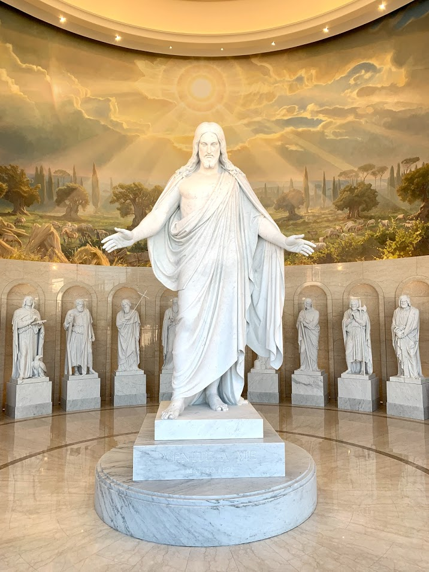

Christ Gave His Life For Us
- Matthew 20:28
- Even as the Son of Man came not to be ministered unto, but to minister, and to give his life a ransom for many
- 1 Corinthians 15:3
- For I delivered unto you first of all that which I also recieved, how that Christ died for our sins according to the scriptures
- Titus 2:14
- Who gave himself for us, that he might redeem us from all iniquity, and purify unto himself a peculiar people, zealous of good works
- Hebrews 9:12
- Neither by the blood of goats and calves, but by his own blood he entered in once into the holy place, having obtained eternal redemption for us
Christ is our Savior
- Acts 2:21
- And it shall come to pass, that whosoever shall call on the name of the Lord shall be saved
- Acts 4:12
- Neither is there salvation in any other: for there is none other name under heaven given among men, whereby we must be saved
- Acts 13:47
- For so hath the Lord commanded us, saying, I have set thee to be a light of the Gentiles, that though shouldest be for salvation unto the ends of the earth
We Are Saved Through Christ's Atonement
- Romans 5:9
- Much more then, being now justified by his blood, we shall be saved from wrath through him
- Philipians 2:8
- And being found in fashion as a man, he humbled himself, and became obedient unto death, even the death of the cross
- Hebrews 7:27
- Who needeth not daily, as those high priests, to offer up sacrifice, first for his own sins, and then for the people's: for this he did once, when he offered up himself
- 1 John 1:7
- But if we walk in the light, as he is in the light, we have fellowship one with another, and the blood of Jesus Christ his Son cleanseth us from all sin